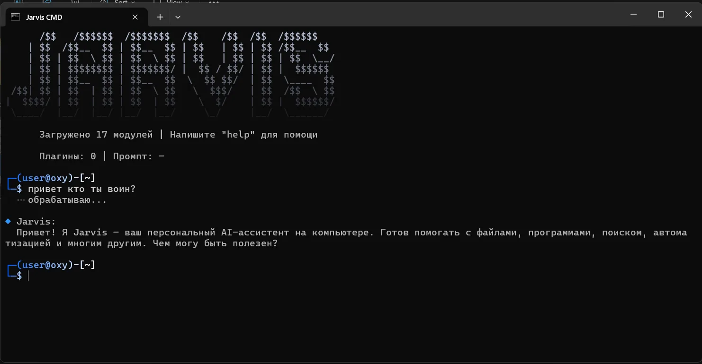
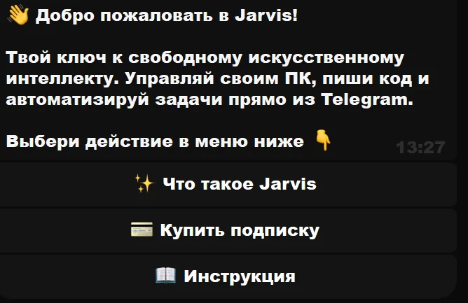
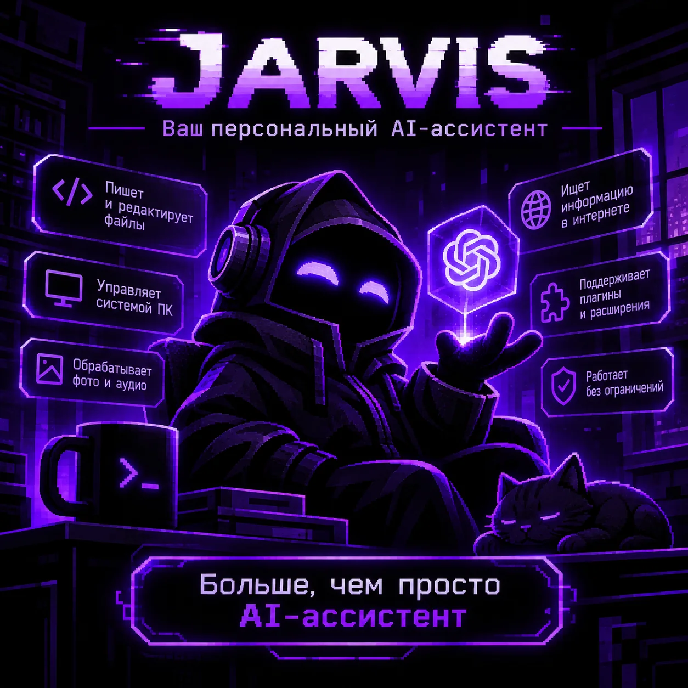

01 / FILE SYSTEM
Файлы — в любой папке
Читает, создаёт и редактирует файлы в разных местах системы. Не ограничивается одной рабочей директорией.
Jarvis — ассистент, который работает на твоём ПК. Управляй файлами, запускай код и автоматизируй задачи через Telegram или собственный CLI.

Jarvis получает доступ к инструментам компьютера и помогает выполнять реальные задачи — от работы с документами до запуска собственного кода.
Читает, создаёт и редактирует файлы в разных местах системы. Не ограничивается одной рабочей директорией.
CPU, GPU, RAM, диски, сеть и установленные программы — информация о компьютере под рукой.
Запускает shell-команды и Python-код, чтобы переходить от идеи к выполнению.
Передавай фотографии и скриншоты — Vision-модель поможет разобрать их содержимое.
Распознаёт голос через Whisper и читает PDF, DOCX, CSV и SQLite.
По запросу создаёт плагины с собственным кодом и README — под задачи владельца.
Веб-поиск, GitHub API, чтение и отправка почты — через доступные инструменты Jarvis.
Один Jarvis — разные сценарии. Напиши сообщение в Telegram или открой терминал и работай в CLI.
Отправляй текст, голосовые сообщения, изображения и документы прямо боту.
Лаконичный терминал, ASCII-логотип, статус модулей и двухстрочный prompt.
В боте можно узнать о Jarvis, выбрать лицензию и перейти к инструкциям.
Открыть @JarvisAI_agent
Для простых запросов Jarvis обращается к Groq напрямую. Для многошаговых задач Mistral сначала формирует план, а затем Groq выполняет его с помощью инструментов.

Скажи Jarvis, чему нужно научиться. Он может подготовить отдельный плагин в папке haiper/<name>/ с файлом main.py и README.
jarvis@local ~ > Научись делать X [ok] Создан каталог плагина [ok] main.py [ok] README.md
Пример сценария из концепции продукта; состав и результат плагина зависят от задачи.
Иллюстрации проекта и реальные экраны интерфейсов. Никаких пустых заглушек — только материалы Jarvis.
Jarvis поставляется как архив проекта. Настрой API по инструкции, открой исполняемый файл — и подключай ассистента к своему рабочему процессу.
Перейди в @JarvisAI_agent и выбери подходящую лицензию.
После покупки бот предоставит ZIP-архив и ссылки на дальнейшие инструкции.
Получи необходимые ключи по инструкциям и внеси их в файл конфигурации.
Открой исполняемый файл на Windows и выбери Telegram или CLI для работы.
Покупка и получение проекта проходят через официальный Telegram-бот.
Лицензия Jarvis на один месяц.
Постоянная лицензия Jarvis.
Текущая версия предназначена для Windows. Поддержка других операционных систем рассматривается на будущее, но сейчас не заявляется.
Telegram-бот выдаст архив проекта и дальнейшие инструкции по настройке. Jarvis запускается на компьютере пользователя.
Да. Необходимые API-ключи нужно получить по ссылкам из инструкции и добавить в конфигурацию проекта. Не размещай их в публичных репозиториях.
Jarvis работает на твоём ПК и использует инструменты для файлов, команд, Python-кода и документов. Управлять им можно через Telegram или CLI.
Месячная лицензия стоит 150 Telegram Stars, постоянная — 1000 Telegram Stars. Ключ привязывается к оборудованию по HWID.

Посмотри возможности, выбери лицензию и получи проект через Telegram.
Перейти в Telegram-бота